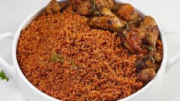

Jollof Rice

Description
Jollof rice is a visually striking dish with its deep red hue,
achieved through the use of tomatoes(fresh tomatoes or tin tomatoes)
and peppers.The rice is cooked in a rich tomato-based sauce,which is infused with a blend of spices,
giving it a complex and aromatic flavor.The dish often includes vegetables like onions and bell peppers,and can
be paired with various proteins suh as chicken,beef,or fish.The texture of the rice is fluffy yet slightly sticky,absorbing
the flavors of the sauce perfectly.
About Jollof Rice
Jollof rice is a popular and iconic dish in West African cuisine, known for its rich, savory flavor and vibrant red color. The dish is made
primarily from rice, tomatoes, onions, and a variety of spices. It is a staple at celebrations and gatherings, making it a culturally significant meal across many
West African countries
Key Points:
Origin:
Origins of Jollof rice can be traced back to the Wolof people of Senegal2.
Variations:
Different countries, including Nigeria, Ghana, and Senegal, have their own versions of Jollof rice, leading to a friendly
rivalry known as the "Jollof Wars"2(which I strongly believe Nigeria is winning->) .
Ingredients to make Jollof rice
- Rice
- Fresh Tomatoes
- Fresh peppers
- Onions
- Groundnut oil
- Tomato Paste
- Curry and Thyme
- Salt
- Garlic and Ginger
- Carrots(optional)
- Bouillon cubes
- Bay leaves
- Peas
For Protein:
- Meat/Fish/Chicken
- Egg
Steps in making Jollof rice
- Wash your chicken and put it into the pot(The same applies for meat or fish)
- Add the spices,curry,salt,ginger,garlic,thyme,and onions.
- Add water and wait for about 15 minutes till the chicken is soft and keep the water aside.
- Wash your rice and put it into a pot and add water
- Cook it till it is almost soft and set it aside
- Prep your dry ingredients:cut your onions,pepper,carrot,tomatoes.
- Pour your oil into the pot ,and add your dry ingredients
- Add curry and thyme and any extra spice and then put in your tomato paste and allow it fry with your dry ingredients
- Add your meat water and stir it
- Add salt,curry,ginger,garlic,thyme,Bouillon cubes and bay leaf.
- Put in your rice and mix it with the sauce and add your peas
- Preferably,use a foil to cover the pot to trap in the heat
- Wait till the rice is dry and switch of the gas
- Boil the egg in a pot and serve along side with the chicken and rice with a drink(you deserve it->>)